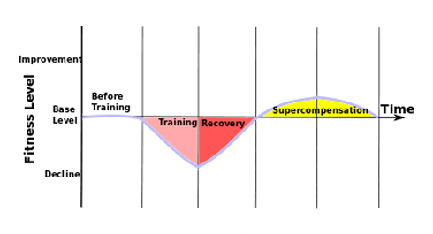
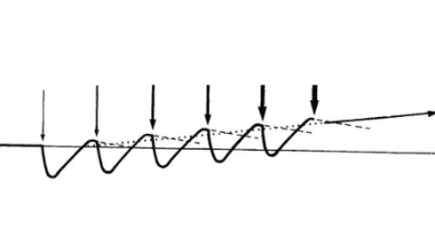

Yesterday we discussed the main aspects that you have to remember when creating your personal training programme after the completion of our 100 Days Workout program. Today we will continue talking about it and explain various training principles and techniques that you can integrate into your programme. We also highlighted 16 most interesting of them!
Main training principles
1. Principle of the progressive loads
Many times we explained how your body reacts to training. It is a stress and an external stimulus, that is why your body will do anything to deal with it as efficiently as possible. That is why you must not be overly repetitive. In time, you get used to the loads and the efficiency drops to near zero.
Is there a way to avoid it? Yes, there is! You need to increase the intensity of your trainings! There are various ways of achieving that, like shorter rest between attempts, increasing the number of reps or the number of exercises or making them harder and so on and so forth.
2. Principle of precision
Precise training loads cause certain reaction and adaptation. Therefore, the loads must be coherent with the athlete’s physical condition and their goals. The principle is evident, when we talk about athletes that do different sports (e.g., shot putters have a totally different training programme than swimmers or long-distance runners).
3. Principle of loads and recovery unity
It is obvious that if you don’t train regularly, then your body does not have to change and adapt. The picture below illustrates the stage when the physical condition returns to the pre-training state. To make your trainings more efficient, you need to understand the correlation of adaptation, overloads and reversibility. Strength and muscles grow if a proper balance between loads and recovery is maintained.

Talking about loads, you need to keep a few things in mind. Firstly, your body gradually adapts to the loads that you take. That is why if you repeat the same exercises at your trainings, then your physical condition will improve initially (until it reaches a certain level), but then it will remain at this very level. Secondly, excess loads won’t let you recover properly, and recovery problems have a tendency to accumulate. It occurs if you always take an excess load or take it too frequently. The decline of your training results due to an incomplete adaptation is one of the hallmarks of an overtrained athlete. In that case you need to take time to recover properly and put your training on hold or reduce the loads significantly.
4. Principle of continuity and reversibility

This principle suggests organising your training process to better preserve the positive effect of the training sessions, eliminate unnecessary breaks between them and minimise the fitness regression.
After training, during the recovery period the body begins normalising its fitness level. It means that the next training may take place when the fitness level is lower that the initial one, the same as the initial, or higher than the initial (the so-called supercompensation). The continuity of the training process allows to accumulate this condition by increasing the loads.
Increasing the loads improves the fitness level via the growth of adaptation and hypercompensation. This, in its turn, can be done by utilizing various techniques. Below we presented 16 techniques of choice.
Main training methods
1. SETs method
To train every muscle or set of muscles to the maximum, you need to make several attempts in each of several exercises to train a certain group of muscles. At the start of the ADVANCED block we explained how to engage different muscles in different exercises and shift the emphasis. You need to do different exercises during the same training to load the muscles to the full.
2. Muscle shock method
Your body adapts to repetitious exercises, therefore you can raise the efficiency if you add the exercises that you have never done before to your programme from time to time. I’m certain that there are plenty of those in the workout. This way your muscles won’t adapt to the loads and you will eliminate your weaknesses.
3. Isolation method
Usually many muscles are engaged during workout which is one of the advantages of this activity. But that does not mean that you can’t find the exercises which utilise your own weight and train isolated sets of muscles. Triceps extensions is an excellent example.
4. Pyramide method
It implies increasing the difficulty with each attempt. It can be done by increasing the number of reps (e.g. 10 reps in the first attempt, 20 in the second, 30 in the third and so on), or by increasing the complexity of the performed exercise (regular push-ups in the first attempt, plyometric push-ups in the second one, push-ups with a clap in the third and so on).
You should be aware of the drawbacks of this method. Muscle fatigue after the first attempt may prevent you from taking high loads that are necessary to stimulate the growth.
The well-known ‘ladder’ is half-pyramid (often ascending), whereas the complete pyramid implies that after the most difficult attempt, you must gradually lower the difficulty with each consecutive attempt to the initial level.
5. Priority method
Implies doing the exercises that train the weakest part of the body at the start of the training, while you are still fresh and at full strength.
6. Intermediary (included) sets method
Implies taking attempts to train ‘problematic’ muscles like abdomen, forearm, shin and other, between the attempts you take to train the chosen set of muscles. You can gather several sets for hard-trained muscles as you train other muscles and thus developing them.
7. Static tension method
Implies imposing static tension on the trained muscles immediately after the exercise. For example, after you do the pull ups to train the biceps, jump down and tense the biceps for a few seconds.
8. Super SETs method
The core idea of this Technique is doing two exercises in a row for antagonistic muscles without any breaks or with a very short break. It increases the intensity of training. For example, pull-ups and push-ups on parallel bars.
9. Combo SETs method
This Technique implies doing two or more exercises for the same set of muscles without or with a very short break.
10. Preliminary fatigue method
Preliminary fatigue means doing an isolated exercise before the basic exercise to train the same set of muscles. Depending on your goals, you can do the exercises employing the Technique of combined sets or in turns during your regular training.
11. Peak contraction method
Peak contraction implies the maximum strain of the working muscle during the maximum (peak) contraction.
12. Short ROM method
Means adding several reps of a lower amplitude at the end of an attempt. E.g. you do usual push-ups on parallel bars, and when you are fatigued and can’t do a full rep, you finish with several reps at a lower amplitude (the upper move or the lower move). It creates additional loads on your muscles.
13. Forced REPs method
It requires the aid of a partner after you exhaust your own stamina and can’t continue doing the exercise. Forced reps is a very hard Technique and you should not abuse it, or instead of muscle growth you will get the opposite result.
14. Negative REPs method
The muscles are made for contraction. Relaxation is a necessary complement to the contraction phase. Therefore, adding the exercises that consist entirely of negative reps will allow you to strain your body with the loads it is not used to!
15. Rest-Pause method
This technique is good if you do hard exercises in which you can do only a few reps per attempt. You make an attempt, then rest for 30 seconds, make another attempt and so on. The main idea is to rest the exact period that is necessary to replenish strength for another attempt comprised of several reps.
16. HIIT method
Traditionally your attempts split into reps, but this technique is different. Intervals means your attempts are split into time periods, i.e. your attempt should last, say, 30 seconds. And you try to do as many reps as possible within that period.